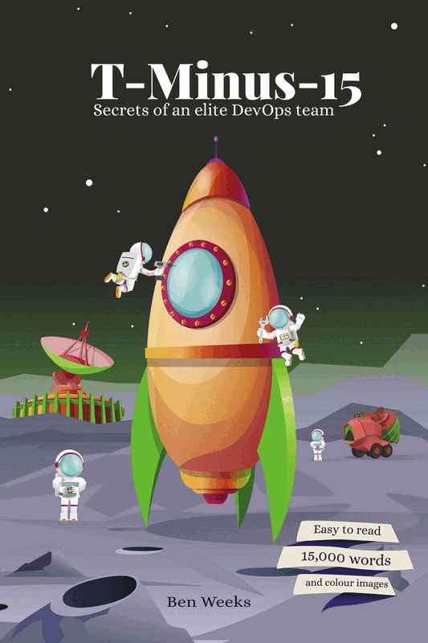

KnowAll AI · T-Minus-15 Workshops
Build your own
elite delivery team
Seven methodology workshops that take your team from Assemble to Operate, hands-on technology sessions on the tools that make it work, and a leadership briefing for running many crews — so your people can deliver with confidence, long after we have gone.

Each methodology workshop is built on a chapter of T-Minus-15: Secrets of an Elite DevOps Team — our open-source delivery methodology, combining the best of Agile and DevOps.
The programme
Three tracks, one launch
Leadership briefing
W-L1MISSION CONTROLThe Gnostic Enterprise
Two hours, for CTOs and stakeholders
Methodology workshops
One workshop for each stage of the T-Minus-15 lifecycle, each built on a chapter of the book. Typically half a day each, with an optional two-hour break-out lab.
- W-M0ASSEMBLEThe Avengers of Agile
- W-M1PLANPlotting the course
- W-M2PREPDecoding the client’s wants and needs
- W-M3DESIGNCrafting UX that doesn’t suck
- W-M4ENGINEERThe art of engineering
- W-M5TESTRaising the bar
- W-M6OPERATEShipping value, not just code
Technology workshops
Any order, typically half a day each, with deeper dives afterwards as needed.
- W-T1Azure DevOps
- W-T2Data storage
- W-T3Power Platform, incl. Code Apps
- W-T4CI/CD
- W-T5Agentic coding
How the workshops run
Learn it, then launch it
Break-out labs
Optional, two hours each, after a methodology workshop. Each group takes one simple use case of its own through the whole countdown.
- W-M0ASSEMBLEBuild your crew
- W-M1PLANPlan a sprint
- W-M2PREPBuild a backlog
- W-M3DESIGNBrand guidelines
- W-M4ENGINEERAgentic delivery
- W-M5TESTAutomated testing
- W-M6OPERATELaunch readiness
In person or remote
- Same format either way: a half-day workshop, whether you join us in person or remotely.
- Break-outs to suit you: the same afternoon, or on another day.
- Built in our environment: nothing to install and no access needed to your systems.
- Sample data only: no customer, personal or confidential data in any build.
Leadership · W-L1
Mission Control: The Gnostic Enterprise
Scaling T-Minus-15 across many teams
From the books: T-Minus-15 · The Gnostic Enterprise
Two-hour briefing
Audience
CTOs, CIOs, sponsors, portfolio and programme leads, and the stakeholders who fund and steer delivery.
Description
The view from mission control: how leaders set the standards, investments and guardrails that let people and AI agents do their best work, from one team to many.
Topics
- Return to Chaos: Embracing Agile Squads
- Understanding Agile for the Enterprise
- The Rise of the Super Employee
- Philosopher Leaders
- Build Fast: Cloud, Low-Code and Agentic Delivery
- The Power of Data: Making Smarter Decisions
- Automate Everything Unhuman
- Bringing Teams Together
- Happy Team = Happy Customer
- Continuous Learning and Improvement
- Go/No-Go: Epics and Lean Business Cases
- Building a Centre of Excellence
- Flight Rules: Guardrails That Speed You Up
- Range Safety: Security by Design
You leave with
A leadership view of scaling delivery across many teams, and the standards and guardrails that let people and agents do their best work.
Methodology · W-M0
Assemble: The Avengers of Agile
Assembling a cross-functional squad that delivers results
From the book: ASSEMBLE: The Avengers of Agile
Half-day workshop
Audience
The whole delivery team — product owners, analysts, designers, developers, testers and operations — plus the managers and sponsors who support them.
Description
The foundation for everything that follows. We cover why agility matters, how Scrum and Kanban work in practice, where DevOps fits, and the roles, values and habits that turn a group of specialists into a squad that ships.
Topics
- Overview of Agile
- The Agile Manifesto
- Pros and cons of Agile
- Agility for the enterprise
- Scrum
- Kanban vs Scrum
- Agile vs DevOps
- DevOps principles
- DevOps across the countdown
- The cross-functional squad
- Team values
- Recruit the best
- Skills for the team
- Remote working
- The power of collaboration
- Positive karma
You leave with
A shared understanding of Agile, Scrum, Kanban and DevOps, and of the roles, values and habits of a squad that ships.
Optional break-out · 2 hours
Build your crew: map your own team to the countdown’s stages, roles and agents, and draft a working agreement.
Methodology · W-M1
Plan: Plotting the course
Sprint goals, honest estimates and a roadmap people can trust
From the book: PLAN: Plotting the Course
Half-day workshop
Audience
The whole delivery team, especially product owners, Scrum Masters, delivery and project managers, and the sponsors who need a date.
Description
Every countdown starts in mission control. Set a sprint goal the client signs up to, size the work honestly against the crew’s real capacity, and schedule only what fits the launch window — with a roadmap of small, regular launches instead of one big-bang release day.
Topics
- Target: setting the sprint goal
- Size: story point estimation
- Total effort vs engineering effort
- Capacity: people and agents
- Schedule: what fits the launch window
- Fifteen steps, not fifteen days
- Sprint types, from Prep & Design to Operational
- The sprint burndown
- Risks and issues
- Kanban boards
- Definition of Done
- WIP limits
- Roadmaps and milestones
- Incremental releases, not big-bang launches
- Release day vs announcement day
You leave with
The confidence to set a sprint goal, size work honestly against real capacity, and plan only what fits.
Optional break-out · 2 hours
Plan a sprint: set the goal, size the work, work out capacity and set up a board for your own example use case.
Methodology · W-M2
Prep: Decoding the client’s wants and needs
From the book: PREP: Decoding the client’s wants and needs
Half-day workshop
Audience
The whole delivery team, especially product owners, business analysts, project managers and the subject-matter experts who shape what gets built.
Description
If you don’t understand the requirements, you’re in for a bumpy ride. Learn how to get real clarity on what the client needs, and turn it into a well-structured product backlog of epics, features and stories the whole team can deliver against.
Topics
- The importance of clarity
- Getting the lowdown
- The product backlog
- Epics
- Features
- Stories
- Tasks
- Bugs and enhancements
- Personas
- So, what does the client want?
You leave with
The skills to draw out what a client really needs, and shape it into a backlog of epics, features and stories.
Optional break-out · 2 hours
Build a backlog: turn your example use case into epics, features and stories with clear acceptance criteria.
Methodology · W-M3
Design: Crafting UX that doesn’t suck
From the book: DESIGN: Crafting UX That Doesn’t Suck
Half-day workshop
Audience
The whole delivery team, especially UX and UI designers, solution architects and the product owners who sign the designs off.
Description
Nobody cares how clever your code is if people hate using it. A practical look at designing experiences that just work: the principles that matter, how to get good UX shipped rather than stuck in theory, and how agents and brand guidelines keep the design consistent.
Topics
- Why give a damn about UX
- The three UX commandments
- Getting practical: UX that ships
- The bottom line
- Agentic design
- Brand guidelines
You leave with
The principles of UX that ships, and how brand guidelines steer people and agents alike.
Optional break-out · 2 hours
Brand guidelines: create brand guidelines that your team and its agents can both follow.
Methodology · W-M4
Engineer: The art of engineering
From the book: ENGINEER: The Art of Engineering
Half-day workshop
Audience
The whole delivery team, especially developers, low-code makers, solution architects and technical leads.
Description
Engineering isn’t slinging code frantically — it’s a mindset. The habits that turn good engineers into an elite team: plan before you build, keep it simple and reusable, use AI and low-code wisely, and hand testers a finished feature rather than a ticking time bomb.
Topics
- Review Prep and Design: look before you leap
- Architect before you code
- Source control: commit early, commit often
- Document as you go
- Build reusable components
- Keep it simple (KISS)
- Leverage AI and low-code
- Finish what you start: make features deployable
- Think like an end user
- Collaborate, don’t isolate
- Balancing focus and flow
You leave with
The engineering habits of an elite team, and how to use AI and low-code without cutting corners.
Optional break-out · 2 hours
Agentic delivery: build your example use case with AI agents, with people reviewing every change.
Methodology · W-M5
Test: Raising the bar
Quality built in from the first acceptance criterion
From the book: TEST: Raising the Bar – The Pursuit of Quality
Half-day workshop
Audience
The whole delivery team, especially testers and QA analysts, plus the business users who carry out acceptance testing.
Description
Not just good — awesome. How to shift testing left so quality is built in from the first line of code: clear acceptance criteria, test plans every story can be checked against, and the automated, security, performance and user testing that proves a release is ready.
Topics
- The importance of acceptance criteria
- Test plans, suites and cases
- Features vs bugs vs enhancements
- Static code analysis
- Automated UI testing
- Security assessment and compliance
- Performance testing
- User acceptance testing
- A/B testing
- The bug cap
You leave with
How to build quality in from the first acceptance criterion, and which tests are worth automating.
Optional break-out · 2 hours
Automated testing: write Playwright tests for the app you built in the Engineer lab (or a sample app we provide), then run them on every change.
Methodology · W-M6
Operate: Shipping value,
not just code
From the chapters: OPERATE: Shipping Value, Not Just Code · Delighted Customers, Not Just Happy Ones
Half-day workshop
Audience
The whole delivery team, especially DevOps and platform engineers, technical leads, and release and service managers.
Description
Building the delivery engine that turns great ideas into deployed features with minimal friction. Pipelines, branching and infrastructure-as-code that make releases boring in the best way — and the feedback loops that keep a solution improving long after launch.
Topics
- CI/CD: the backbone of modern delivery
- Pick a branching strategy
- GitFlow vs Release Flow
- Topic branches: short and sweet
- Lock down your repo with sensible policies
- Git habits that won’t annoy your team
- Infrastructure-as-code
- Build pipelines
- Release pipelines
- From ideas to delivery
- Release notes people actually read
- The anti-dramatic launch
- Get feedback that actually matters
- Life after launch
You leave with
How pipelines, branching and release habits make launches boring, and how to keep improving after go-live.
Optional break-out · 2 hours
Launch readiness: put together the release checklist, release notes and go-live plan for your example use case.
Technology · W-T1
Azure DevOps
Backlogs, boards, test plans and repos
Half-day workshop
Audience
The whole delivery team — product owners, analysts, developers, testers and project managers.
Description
A hands-on tour of the platform that runs the T-Minus-15 process day to day. Set up a backlog and boards your team will actually use, plan and track sprints, manage test plans and suites, and keep code in repos with pull requests and policies.
Topics
- Backlogs: epics, features and stories
- Boards and sprints
- Queries and dashboards
- Test plans and suites
- Repos and pull requests
- Pipelines at a glance
You leave with
The confidence to run backlogs, boards, sprints, test plans and repos in Azure DevOps day to day.
Optional follow-ups
Deep dives on specific subjects, as needed.
Technology · W-T2
Data storage
Dataverse vs SharePoint vs SQL
Half-day workshop
Audience
Solution architects, data engineers, developers and Power Platform makers.
Description
Choosing where your data lives is one of the hardest decisions to undo. We compare Dataverse, SharePoint and SQL side by side — capability, security, performance, licensing and cost — so you can pick the right store for each solution with confidence.
Topics
- Dataverse
- SharePoint lists and libraries
- Azure SQL
- Security and access models
- Scale, delegation and performance
- Licensing and cost
- Choosing the right store
You leave with
A clear way to choose between Dataverse, SharePoint and SQL for each kind of data.
Optional follow-ups
Deep dives on specific subjects, as needed.
Technology · W-T3
Power Platform
Including Code Apps
Half-day workshop
Audience
Power Platform makers, developers and analysts who build or support business apps.
Description
From canvas and model-driven apps to Code Apps and Power Automate, learn how to build business solutions quickly without cutting corners — and how solutions, environments and connection references keep them manageable as they grow.
Topics
- Canvas apps
- Model-driven apps
- Code Apps
- Power Automate
- Connectors
- Solutions and environments
- ALM for Power Platform
You leave with
A working understanding of canvas, model-driven and Code Apps, and how to keep solutions manageable as they grow.
Optional follow-ups
Deep dives on specific subjects, as needed. The workshop itself can also run as a series of sessions, depending on your team’s experience.
Technology · W-T4
CI/CD
Continuous integration and delivery
Half-day workshop
Audience
Developers, DevOps and platform engineers, and technical leads.
Description
Build the pipelines that take code from commit to customer automatically. Hands-on with build and release pipelines, environments and approvals, branch policies, secrets and infrastructure-as-code — including deploying Power Platform solutions.
Topics
- Continuous integration
- Build pipelines
- Release pipelines and environments
- Approvals and branch policies
- Secrets and service connections
- Infrastructure-as-code
- Deploying Power Platform solutions
You leave with
An understanding of how pipelines carry code, including Power Platform solutions, from commit to customer.
Optional follow-ups
Deep dives on specific subjects, as needed.
Technology · W-T5
Agentic coding
Humans and AI agents as one team
Half-day workshop
Audience
Developers and technical leads, plus analysts and testers who want to work alongside AI agents.
Description
AI agents can now plan, write, test and review code — with people firmly in charge. See how we use tools such as Claude Code across the T-Minus-15 lifecycle, where agents add genuine value, and the skills, guardrails and reviews that keep their output trustworthy.
Topics
- What agentic coding is
- Claude Code in practice
- Skills and specialist agents
- Writing good specs and prompts
- Agent-assisted testing and review
- Guardrails and human sign-off
- Where agents help, and where they don’t
You leave with
A practical sense of where agents add genuine value, and the guardrails and reviews that keep their work trustworthy.
Optional follow-ups
Deep dives on specific subjects, as needed.
Ready for
lift-off?
Talk to us about running the T-Minus-15 workshops with your team — the methodology workshops for your whole delivery team, and the technology sessions wherever they help most.
Plan your workshops